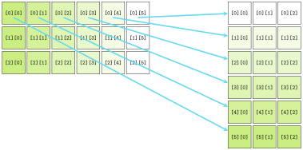

Jed Rembold
March 20, 2023
To the right are the contents of a text file named
PBride.txt. Which code snippet below would
print off the word “father”?
My name is Inigo Montoya.
You killed my father.
Prepare to die.with open('PBride.txt') as f:
for line in f:
w = line.split()
if w[0] == "You":
print(w[-1])c = read('PBride.txt')
print(c.find("father"))with open('PBride.txt') as f:
c = f.read().splitlines()
print(c[1][4])with open('PBride.txt') as f:
c = f.read()
i = c.find("f")
print(c[i:i+6])The Python package used to implement
pgl.py also supports a mechanism to choose
files interactively, made available through the
filechooser.py library module.
filechooser.py exports two
functions:
choose_input_file for selecting a
filechoose_output_file for selecting a
folder and filename to save a file toBoth open up a file dialog that lets you select/choose a file
Using it thus looks something like:
filename = choose_input_file()
with open(filename) as f:
# Code to read fileGImage type objectGrayscaleImage.py that you can import into
your main programGButtonGButton gets a label and a callback
function name that determines what function is called when that button
is clickedadd_button function which will take care of
adding a new button to the correct part of the screen.
GImage currently
displayed on the window in a variable called
gw.current_imagegw so that you will have access to it in any
callback function you writeset_image on the output of your manipulation
function, which will take care of updating the value of
gw.current_image
ImageShop.py as needed.